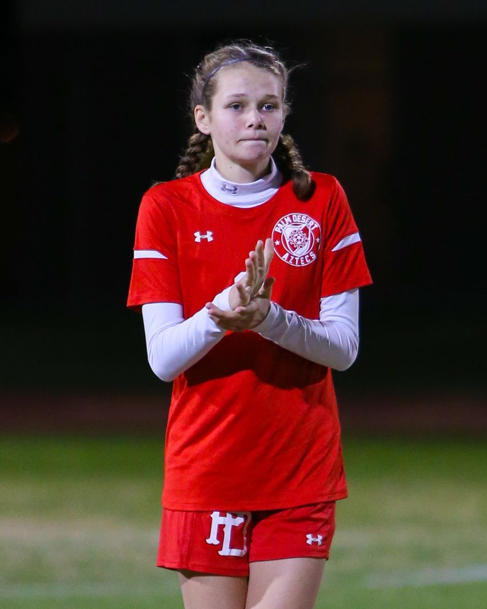

My name is Megan Clapinski, and I am a sophomore at Palm Desert High School. My career goal is to do something I love. What I want to do right now is to be a professional soccer player. I plan on working hard, and learning the game as I grow to it. I want to play professional because playing soccer is what I love doing now. I love watching the game of soccer and playing it physically and digitally.
I would describe myself as self-motivated, open-minded, and a risk-taker. These traits all tie into my career goal. In soccer to succeed you have to be self-motivated. Working out outside of soccer is what I do weekly. To be open-minded is another trait you need to have to succeed in soccer. When coaches ask players to study a game plan, that might be a little different from the original game plan you have to be open minded to learn and adapt to the changes. That might be different from the one we always use, I am willing to try it out and see if it works. Finally to be a risk-taker is the most important quality that I can provide. In soccer, you have to take risks to be victorious. If you do not take risks in the game you never will know if that risk will pay off to be something more then what you did instead. From all of these experiences I have learned so much about myself. One of the things I can honestly say is that working hard and improving is one of the things that I can proudly say about myself.
In summary, I believe that my plan to accomplish my goal will work in my favor, and my skills and traits will help me fulfill my goal aswell. Thank you, and I hope you have time to look at the rest of my website.
|  |
|---|